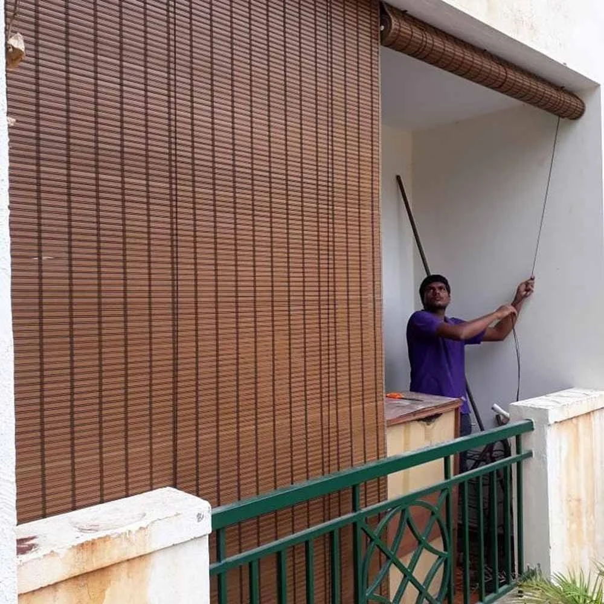
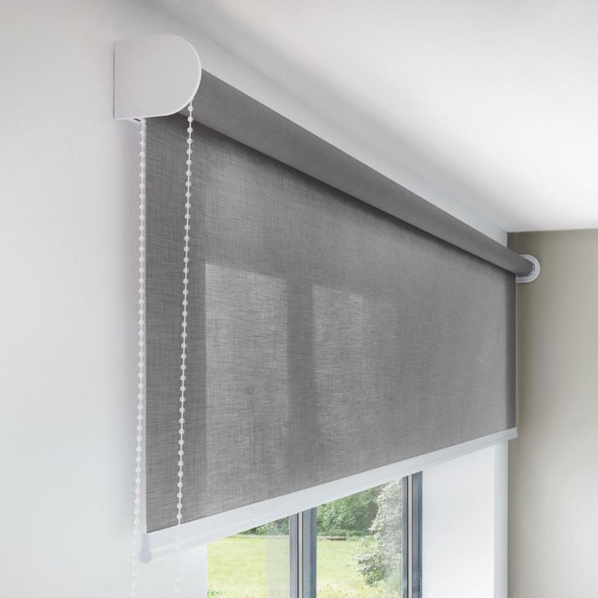
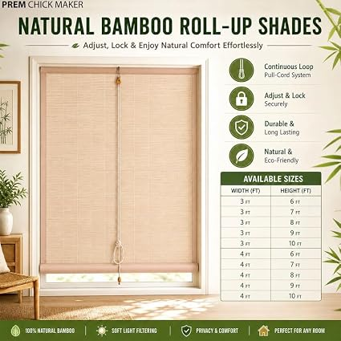
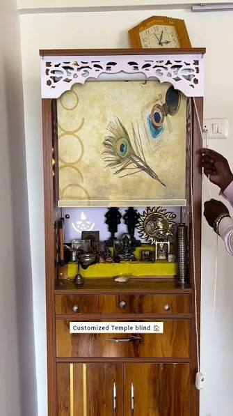
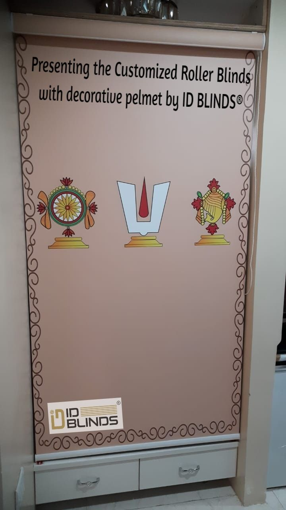
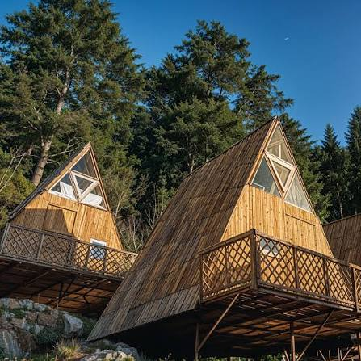

Sector 15 Faridabad
Premium bamboo chick blinds for builder floors, independent houses, living-room windows and covered balconies in Sector 15.
SEO focus: Premium bamboo chick blinds Sector 15 Faridabad.
Sector 15 EnquiryThe Chick Blinds provides made-to-measure bamboo chick blinds, natural bamboo curtains, balcony blinds, window blinds, patio shades and outdoor roll-up blinds across selected residential sectors of Faridabad.
Every blind is prepared according to the opening measurements, sunlight direction, privacy requirement, interior style, wind exposure and available wall or ceiling support.
Fixed Faridabad Coverage
Inspection Charges
Made-to-Measure Blinds


Measurement and fitting across selected Faridabad sectors.
Faridabad Area Coverage
These are the fixed Faridabad locations for upcoming dedicated service pages. Until each child page is created, customers can send their sector directly through WhatsApp.

Premium bamboo chick blinds for builder floors, independent houses, living-room windows and covered balconies in Sector 15.
SEO focus: Premium bamboo chick blinds Sector 15 Faridabad.
Sector 15 Enquiry
Sunlight-control bamboo blinds for park-facing houses, balcony doors, bedrooms and custom builder-floor windows.
SEO focus: Sunlight-control bamboo blinds Sector 17 Faridabad.
Sector 17 EnquiryNatural bamboo window blinds and roll-up curtains for apartments, independent floors and covered balconies.
SEO focus: Natural bamboo window blinds Sector 19 Faridabad.
Sector 19 Enquiry
Custom apartment bamboo blinds for Sector 21, Sector 21C and Sector 21D balconies, windows and living-room openings.
SEO focus: Apartment bamboo blinds Sector 21 Faridabad.
Sector 21 Enquiry
Custom-size and budget bamboo blinds for houses, builder floors, balcony openings and chick blinds for windows.
SEO focus: Custom-size bamboo blinds Sector 23 Faridabad.
Sector 23 Enquiry
Outdoor bamboo shades and roll-up chick blinds for offices, industrial properties, staff housing and covered openings.
SEO focus: Outdoor bamboo shades Sector 24 Faridabad.
Sector 24 EnquiryBamboo roller blinds for premium builder floors, large windows, balconies and homes near Sector 28 Metro.
SEO focus: Bamboo roller blinds Sector 28 Faridabad.
Sector 28 EnquiryBamboo blinds for covered patios, terraces, balconies and residential windows in Sector 30.
SEO focus: Bamboo blinds for patio Sector 30 Faridabad.
Sector 30 EnquiryMade-to-measure bamboo blinds for apartment windows, balcony doors, patios and covered residential entrances.
SEO focus: Bamboo blinds for windows and doors Sector 32 Faridabad.
Sector 32 EnquiryBamboo curtains for balconies and premium builder-floor windows around Ashoka Enclave Part 3.
SEO focus: Bamboo curtains for balcony Sector 35 Faridabad.
Sector 35 EnquiryLocal bamboo chick blinds for Ashoka Enclave, apartment balconies, builder floors and homes near Sarai Metro.
SEO focus: Bamboo chick blinds near me Sector 37 Faridabad.
Sector 37 EnquiryPremium outdoor bamboo blinds for villas, patios, balconies and covered garden-facing openings around Charmwood Village.
SEO focus: Premium outdoor bamboo blinds Sector 39 Faridabad.
Sector 39 EnquiryCustom bamboo blinds for Green Field Colony builder floors, terraces, living rooms, windows and balconies.
SEO focus: Bamboo blinds Green Field Colony Sector 41 Faridabad.
Sector 41 EnquiryBamboo porch blinds, balcony curtains and custom window blinds for houses, plots and residential pockets around Sector 65.
SEO focus: Bamboo blinds for porch Sector 65 Faridabad.
Sector 65 EnquiryBamboo chick blinds, balcony curtains and window shades for Badarpur Border, Sarai, Molarband and nearby Faridabad-side residential areas.
SEO focus: Bamboo chick blinds near Badarpur Faridabad border.
Badarpur EnquiryProminent Residential Coverage
The following list includes prominent currently listed apartment and residential projects across the selected sectors. Project inventory and names can change, so site access should be confirmed before inspection.
Site inspection and measurement charges start from ₹300 and may go up to ₹500 depending on distance, parking, society access, floor level, number of openings and installation requirements.
Confirm the applicable charge before scheduling the visit.
Faridabad Product Range
Natural bamboo chick blinds provide filtered daylight, daytime privacy and a warm traditional finish.
Custom balcony bamboo blinds help reduce direct glare and provide privacy in apartments and independent homes.
Manual roll-up blinds can be adjusted according to sunlight, ventilation and privacy requirements.
Bamboo window blinds are suitable for living rooms, bedrooms, kitchens and study-room windows.
Outdoor bamboo shades can be considered for covered balconies, patios and porches after checking weather exposure.
Bamboo roller blinds provide convenient manual control and a natural decorative appearance.
Popular Search Requirements
A 4x6 feet bamboo blind may suit selected windows, balconies and door openings. Exact measurements should be checked before ordering.
Custom size bamboo blinds are prepared according to the measured width and height of windows, doors, balconies, porches and patios.
Bamboo chick blinds price depends on finished size, bamboo quality, weave density, border material, binding, backing and fitting conditions.
Customers searching for cheap bamboo blinds should compare bamboo strength, weave quality, border finish and roll-up mechanism with the quoted price.
Wholesale and bulk enquiries can be discussed for homes, apartments, offices, restaurants, cafés and commercial properties.
Customers can share opening photographs and approximate sizes through WhatsApp. Final measurements should be confirmed before custom preparation.
Residential Applications
Kitchen bamboo blinds provide privacy and filtered light but should remain away from open flames, direct heat and continuous water exposure.
Bamboo curtains help filter sunlight and provide daytime privacy in covered apartment balconies.
Porch blinds provide natural shade for covered entrances, verandas and residential sitting spaces.
Separate blind panels can be prepared so handles, doors and everyday movement remain convenient.
Patio bamboo blinds provide filtered sunlight and privacy in covered outdoor seating spaces.
Chick blinds for windows are available in natural bamboo and weather-resistant material options.
Natural bamboo blinds outdoor work best in covered or semi-protected spaces without continuous direct rain.
Bamboo chick curtains offer a traditional roll-up style for windows, doors, balconies and verandas.
Material Guidance
Natural bamboo blinds are suitable for living rooms, bedrooms, windows, doors and other indoor residential openings.
Covered or semi-protected balconies and patios may be suitable after checking wind, mounting support and occasional rain splash.
Untreated natural bamboo blinds should not be described as completely waterproof. Continuous rain and moisture can affect the material.
PVC or another suitable weather-resistant chick blind is generally better for openings regularly exposed to direct rain.
Installation Process
Send the Faridabad sector, society, apartment, house or commercial property details through WhatsApp.
Send clear photographs of the window, balcony, door, porch or patio with approximate measurements.
The opening size, fitting support, sunlight, privacy and outdoor exposure are checked.
Select bamboo shade, weave, border, number of sections, roll-up arrangement and optional privacy backing.
The blinds are prepared according to confirmed measurements and installed after checking alignment and smooth operation.
Genuine Review Coverage
Replace these placeholders with genuine customer names and approved feedback after completing installations. Fabricated reviews should not be published or added to review schema.
Add genuine customer feedback here after completing bamboo balcony blind or bamboo window blind installation in Mahindra Chloris, Sector 19.
Add approved resident feedback here after installing custom bamboo chick blinds in Grand Vista, Sector 21C.
Add genuine feedback here after completing bamboo roll-up blind or patio shade installation in RPS Paras Apartment, Sector 30.
Add approved resident feedback here after installing bamboo blinds for windows, doors or balconies in Sector 32.
Add genuine feedback here after completing custom bamboo blinds in Ashoka Enclave 2, Sector 37.
Add approved customer feedback here after installing outdoor bamboo shades or patio blinds in Sector 39.
Add genuine customer feedback here after installing premium bamboo window or balcony blinds in Sector 41.
Add approved resident feedback here after completing bamboo curtains for a balcony or window in Sector 35.
Faridabad FAQs
The Chick Blinds provides local service across Sector 15, Sector 17, Sector 19, Sector 21, Sector 23, Sector 24, Sector 28, Sector 30, Sector 32, Sector 35, Sector 37, Sector 39, Sector 41, Sector 65 and the Badarpur–Faridabad border area.
Prominent coverage includes Mahindra Chloris, Flora Apartments, Grand Vista, Pragati Apartment, RPS Paras Apartment, Swatantra Indraprastha Apartments, Kanishka Residency, Ashoka Enclave 2, Espire Hamilton Heights, Eros Garden Villas, Edenwood Towers, Rise Sky Bungalows and other selected projects, subject to accessibility.
Inspection and measurement charges start from ₹300 and may go up to ₹500 depending on travel distance, parking, property access, floor level and the number of openings.
Yes. Bamboo blinds can be prepared according to the measured width and height of each window, balcony, door, porch or patio.
Yes. A 4x6 feet bamboo blind can be discussed after checking the actual opening measurements and fitting support.
Natural bamboo blinds are generally suitable for covered or semi-protected balconies after checking wind and direct rain exposure.
Untreated natural bamboo blinds are not fully waterproof. PVC or another weather-resistant option is better for regular rain and moisture exposure.
Yes. Bamboo blinds can be prepared for kitchen windows but should remain away from flames, direct heat and continuous water exposure.
Yes. Opening photographs and approximate dimensions can be shared through WhatsApp. Exact measurements should be confirmed before production.
Wholesale and bulk enquiries can be discussed for homes, apartments, offices, restaurants, cafés and commercial properties.
No. This is a static website. Each future sector page must be linked manually from this Faridabad hub, added to ItemList and areaServed schema, and included in the sitemap.
Book Faridabad Service
Contact The Chick Blinds for custom bamboo blinds, chick curtains, balcony blinds, window blinds, porch shades and patio blinds across selected Faridabad sectors.